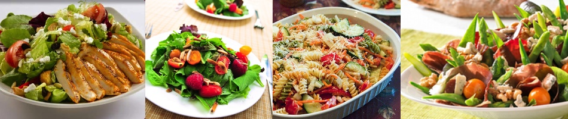

En verden av salater
Salater passer til det meste, enten man skal ha det til en middagsrett, på skiven eller som et eget måltid. Det er svært enkelt å lage, da man kan ta det som finnes i kjøleskapet av grønnsaker og frukt. Dessuten kan man putte oppi nøtter, fetaost, brød og mye mer.
Jeg har derfor laget en liste over mine favouritt salater som kan lages på en enkel måte, så nå er det bare å sette i gang å lage alt du orker!
Her er det bare fantasien som setter grenser for hva du ønsker å lage salater av og med.
